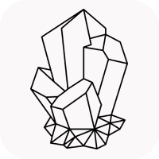

Engineer · Builder · Lifelong learner
把复杂的问题， 做成清晰的系统。
从 C++ 与 GPU 推理，到 Web 与机器人项目；
持续构建，也持续记录。
C++
CUDA
TensorRT
Full Stack

01 / Selected work
Projects
把学习落到项目里，把项目沉淀成可以复用的知识。
04 / About
Learn deeply.
Build clearly.
我关注技术怎样从概念走向可靠的工程实现，也享受把零散理解整理成清晰结构的过程。 这个主页连接我的项目、实验和持续更新的数字花园。
01 Curiosity
02 Craft
03 Clarity
05 / Contact